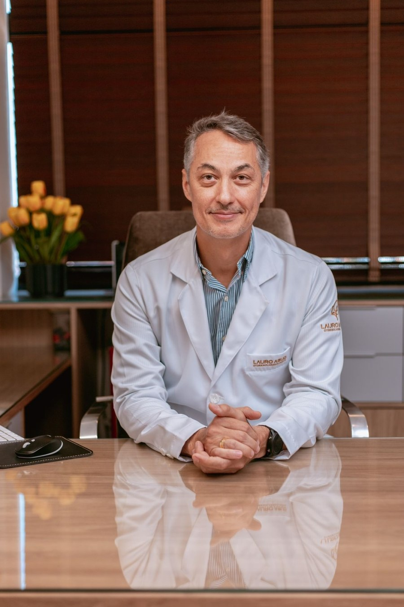
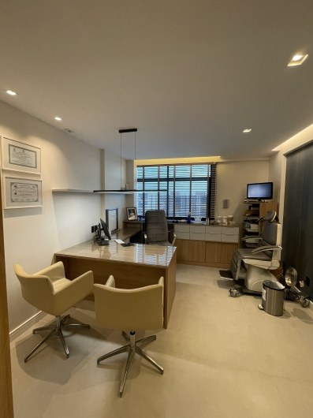
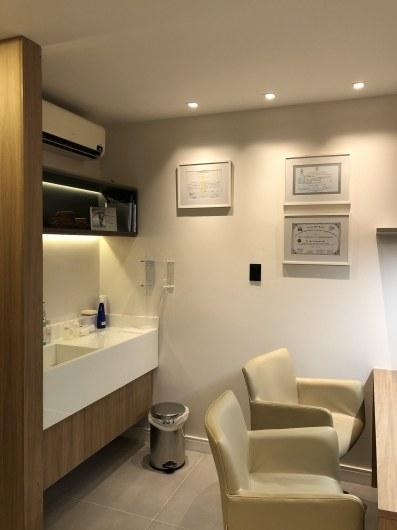

Otorrinolaringologia em Aracaju
Dr. Lauro
do Nascimento Abud.
CRM-SE 2903 · RQE 1711
Respirar, ouvir, encontrar equilíbrio.
Cuidados que fazem parte da vida.
Atendimento de adultos e crianças no bairro Jardins, com informação para ajudar você a dar o próximo passo.
Centro Médico Jardins · Sala 1010
01 / Áreas de cuidado
O que você gostaria
de entender melhor?
Conheça temas presentes na atuação divulgada pelo Dr. Lauro. A orientação para cada pessoa é definida em consulta.
Espirros, coriza, rinite.
Conheça a fala do médico sobre alergias e cuidados respiratórios.
Rinite e respiraçãoRespiração nasalO nariz vive obstruído?
Organize o que observar e o que conversar na avaliação.
Obstrução nasalOuvidos e audiçãoOuvir também é se comunicar.
Mudanças na audição de adultos e crianças merecem atenção.
Audição e otitesEquilíbrioNem toda tontura é igual.
O nome do sintoma não define a sua causa.
Tontura e equilíbrio02 / Um olhar sobre os sintomas
Antes de dar um nome,
vale ouvir a história.
Rinite, obstrução nasal, perda auditiva, otites e doenças do labirinto estão entre as áreas divulgadas no perfil profissional do Dr. Lauro.
Áreas no perfil profissional ↗Quando começou?
Reconhecer o início e a repetição de um sintoma ajuda a organizar o relato.
O que mudou na rotina?
Respirar, conversar e se equilibrar são experiências diferentes. Conte o que percebeu.
O que já foi investigado?
Exames anteriores e informações sobre tratamentos ajudam na conversa, sem substituir a avaliação.
03 / Nas palavras do médico
“A automedicação
deve ser evitada.”
Em entrevista sobre doenças respiratórias, o Dr. Lauro chama atenção para a avaliação dos sintomas e para o cuidado específico em cada situação.
Dr. Lauro Abud à Infonet · 2023 ↗04 / Trajetória e pesquisa
Uma trajetória que também
passa pela produção científica.
Trabalhos em autoria e coautoria fazem parte do percurso documentado do médico.
Coautoria no Jornal Brasileiro de Neurocirurgia.
Ver publicação ↗2003Anatomia nasalCoautoria de estudo sobre variações anatômicas do meato médio.
Ver publicação ↗2007Rinosporidiose nasalArtigo em International Archives of Otorhinolaryngology.
Ver publicação ↗Publicações históricas apresentadas como trajetória, não como orientação de tratamento atual.


05 / O consultório
Um endereço
nos Jardins.
Consultório Dr. Lauro Abud, na Clínica Otorhinus, no Centro Médico Jardins.
Av. Ministro Geraldo Barreto Sobral, 2131, sala 1010 · Jardins · Aracaju/SE · CEP 49026-010Planeje sua chegada →Horários de atendimento e convênios: confirme com a equipe.
06 / Pedido de horário
Escolha sua preferência.
A equipe confirma.
Este não é um calendário de vagas. O pedido chega à recepção somente quando você enviar a mensagem pelo seu WhatsApp.
07 / Leituras e entrevistas
Informação que aproxima
o cuidado do dia a dia.
08 / Perfil público
Conheça também
o perfil do consultório.
Nota consultada em 29/10/2026. O total de avaliações não estava disponível na visualização consultada.
Abrir perfil no Google Maps ↗09 / Perguntas frequentes
Para chegar com menos dúvidas.
O Dr. Lauro atende crianças?
Sim. O perfil profissional informa atendimento de adultos e crianças de qualquer idade. Combine os detalhes com a recepção.
Escolher um horário aqui confirma a consulta?
Não. Você informa uma preferência e leva o pedido ao WhatsApp. A recepção precisa verificar a disponibilidade e confirmar manualmente.
Onde fica o consultório?
No Centro Médico Jardins, Av. Ministro Geraldo Barreto Sobral, 2131, sala 1010, Jardins, Aracaju/SE.
Como confirmar convênios e horários?
Fale com a equipe pelo (79) 98131-0053 ou pelo (79) 3214-0831. Essas informações devem ser confirmadas diretamente com a recepção.
10 / Próximo passo
Cuidar começa
por dar atenção.
Otorrinolaringologia para adultos e crianças nos Jardins, em Aracaju. A recepção pode ajudar com o seu pedido de horário.
Fazer um pedido de horário →